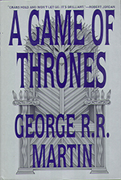
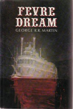
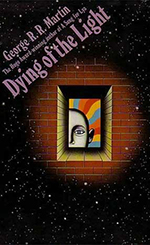
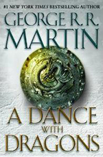

George RR. Martin
George R.R. Martin sold his first story in 1971 and has been writing professionally since then. He spent ten years in Hollywood as a writer-producer, working on The Twilight Zone, Beauty and the Beast, and various feature films and television pilots that were never made. In the mid ‘90s he returned to prose, his first love, and began work on his epic fantasy series, A Song of Ice and Fire. He has been in the Seven Kingdoms ever since. Whenever he’s allowed to leave, he returns to Santa Fe, New Mexico, where he lives with his wife Parris, and two cats named Augustus and Caligula, who think they run the place [5]. While often compared to J. R. R. Tolkien, Martin writes a grittier, earthier type of fantasy fiction than the man who created The Lord of the Rings. Martin's Westeros is mainly populated by humans who live morally complex lives and follow their own agendas. And his plots are masterfully handled, much like the game of chess he so enjoys. As one critic wrote, "Martin is a literary dervish, enthralled by complicated characters and vivid language, and bursting with the wild vision of the very best tale tellers [6].
Works
-

A Game Of Thrones
Long ago, in a time forgotten, a preternatural event threw the seasons out of balance. In a land where summers can last decades and winters a lifetime, trouble is brewing. The cold is returning, and in the frozen wastes to the north of Winterfell, sinister forces are massing beyond the kingdom’s protective Wall. To the south, the king’s powers are failing—his most trusted adviser dead under mysterious circumstances and his enemies emerging from the shadows of the throne. At the center of the conflict lie the Starks of Winterfell, a family as harsh and unyielding as the frozen land they were born to. Now Lord Eddard Stark is reluctantly summoned to serve as the king’s new Hand, an appointment that threatens to sunder not only his family but the kingdom itself.
Sweeping from a harsh land of cold to a summertime kingdom of epicurean plenty, A Game of Thrones tells a tale of lords and ladies, soldiers and sorcerers, assassins and bastards, who come together in a time of grim omens. Here an enigmatic band of warriors bear swords of no human metal; a tribe of fierce wildlings carry men off into madness; a cruel young dragon prince barters his sister to win back his throne; a child is lost in the twilight between life and death; and a determined woman undertakes a treacherous journey to protect all she holds dear. Amid plots and counter-plots, tragedy and betrayal, victory and terror, allies and enemies, the fate of the Starks hangs perilously in the balance, as each side endeavors to win that deadliest of conflicts: the game of thrones. [1]
Publishers Weekly
In a world where the approaching winter will last four decades, kings and queens, knights and renegades struggle for control of a throne. Some fight with sword and mace, others with magic and poison. Beyond the Wall to the north, meanwhile, the Others are preparing their army of the dead to march south as the warmth of summer drains from the land. After more than a decade devoted primarily to TV and screen work, Martin (The Armageddon Rag, 1983) makes a triumphant return to high fantasy with this extraordinarily rich new novel, the first of a trilogy. Although conventional in form, the book stands out from similar work by Eddings, Brooks and others by virtue of its superbly developed characters, accomplished prose and sheer bloody-mindedness. Although the romance of chivalry is central to the culture of the Seven Kingdoms, and tournaments, derring-do and handsome knights abound, these trappings merely give cover to dangerous men and women who will stop at nothing to achieve their goals.
When Lord Stark of Winterfell, an honest man, comes south to act as the King's chief councilor, no amount of heroism or good intentions can keep the realm under control. It is fascinating to watch Martin's characters mature and grow, particularly Stark's children, who stand at the center of the book. Martin's trophy case is already stuffed with major prizes, including Hugos, Nebulas, Locus Awards and a Bram Stoker. He's probably going to have to add another shelf, at least. Reed Business Information | Publishers Weekly @ Amazon.com
Amazon.com
Readers of epic fantasy series are: (1) patient--they are left in suspense between each volume, (2) persistent--they reread or at least review the previous book(s) when a new installment comes out, (3) strong--these 700-page doorstoppers are heavy, and (4) mentally agile--they follow a host of characters through a myriad of subplots. In A Game of Thrones, the first book of a projected six, George R.R. Martin rewards readers with a vividly real world, well-drawn characters, complex but coherent plotting, and beautifully constructed prose, which Locus called "well above the norms of the genre."
Martin's Seven Kingdoms resemble England during the Wars of the Roses, with the Stark and Lannister families standing in for the Yorks and Lancasters. The story of these two families and their struggle to control the Iron Throne dominates the foreground; in the background is a huge, ancient wall marking the northern border, beyond which barbarians, ice vampires, and direwolves menace the south as years-long winter advances. Abroad, a dragon princess lives among horse nomads and dreams of fiery reconquest.
There is much bloodshed, cruelty, and death, but A Game of Thrones is nevertheless compelling; it garnered a Nebula nomination and won the 1996 Locus Award for Best Fantasy Novel. Nona Vero | Amazon.com
Booklist
The first volume in Martin's first fantasy saga, A Song of Ice and Fire, combines intrigue, action, romance, and mystery in a family saga. The family is the Starks of Winterfell, a society in crisis due to climatic change that has created decades-long seasons, and a society almost without magic but with human perversity abundant and active. Martin reaches a new plateau in terms of narrative technique, action scenes, and integrating (or not injecting) his political views into the story. He does not avoid a dauntingly large cast and a daunting number of viewpoint shifts, but these are problems seemingly inseparable from the multivolume fantasy genre. Accordingly, one doubts there will be any other comfortable entry point into this example of the genre except at the beginning. Judging by this beginning, however, it promises to repay reading and rereading, from first volume to last, on account of its literacy, imagination, emotional impact, and superb world-building. Roland Green | BookList @ Amazon.com
-

Fevre Dream
Abner Marsh, a struggling riverboat captain, suspects that something’s amiss when he is approached by a wealthy aristocrat with a lucrative offer. The hauntingly pale, steely-eyed Joshua York doesn’t care that the icy winter of 1857 has wiped out all but one of Marsh’s dilapidated fleet; nor does he care that he won’t earn back his investment in a decade. York’s reasons for traversing the powerful Mississippi are to be none of Marsh’s concern—no matter how bizarre, arbitrary, or capricious York’s actions may prove. Not until the maiden voyage of Fevre Dream does Marsh realize that he has joined a mission both more sinister, and perhaps more noble, than his most fantastic nightmare—and humankind’s most impossible dream. [2]
E. A. Solinas
"Fevre Dream" is one of those brilliant genre novels that slipped between the cracks for many years, only to flower again when the vampire craze did. George R.R. Martin wove his own unique vampire mythos, and mixed it in with Southern grittiness, some shocking gore, and a grizzled ugly old man who may be the vampires' salvation. Steamboat captain Abner Marsh has become business partners with the gentlemanly Joshua York, who pays for the construction of the ultimate steamboat. But strange deaths along the Mississippi lead Abner to suspect that something isn't quite kosher with Joshua, until Joshua reveals the truth about himself -- he and his friends are vampires, who are working to free his race from their bloodlust.
However, the evil bloodmaster Damon Julian wants to keep the vampires as-is, since it allows him greater power over his brethren. He's even got a Gollumesque human serving him before long. Abner's attempts to help his friend lead to disaster, and it will be many years before the two friends have a chance at killing Damon again...
Martin is one of the few authors who actually bothers to come up with an origin story for his vampires, rather than just having these pale bloodsucking people be... there. Without revealing too much, he weaves a haunting explanation for the biological, spiritual and cultural differences between humans and vampires, and sets them up as a brother race to homo sapiens (instead of undead corpses). It's awesome. Martin's writing is gritty, dark and sometimes grotesque (a vampire using a BABY as food), and even at the best of times he fills it with the grimy atmosphere of a working-class man living on the Mississippi. The only real problem is the timeskip, which jolts us several years into the future and is kind of disorienting, but that's a relatively small problem.
And the entire plot revolves around two very powerful characters, who share a powerful friendship based on trust and a desire to help the vampire species. Joshua is the usual charming gentlemanly vampire, but he's elevated by his powerful desire to save his species from their enslavement to bloodlust and/or Damon Julian. And Abner is a totally unstereotypical vampire-novel character -- he is ugly, a grizzled military man, and even as a sick old man he kicks butt. "Fevre Dream" is a visceral, gritty vampire novel that takes the time to explore the bloodsuckers' past, and comes up with a pretty brilliant plot in the present as well. A must-read for vampire fans who like it bloody and dark. E. A. Solinas | Amazon.co.uk
H. Cross
Fevre Dream might be one of the better vampire novels ever written. While most authors add new spins to vampire mythologies, Martin overhauls the entire mechanics of their world, drawing influence from the likes of European folklore and werewolf legends and setting them against the sultry backdrop of the Deep South. If the environment is similar to readers of Anne Rice or, more recently, Harris, there's a spin here too, as placing the action directly on the Mississippi and its steamboats could make this novel truly unique. This historical detail is impeccable and the drama of steaming up and down the river adds an extra richness to what is more than just a horror novel.
None of which would matter if the author hadn't the chops to match his ambition. But Martin is a confident writer, comfortable with description, strong characterisation and vernacular dialogue. If the book sometimes feels a little slow, that's just a side-effect of the plot's depths, and it's never too long before we're navigated back into action-packed waters. Martin's trademark ruthlessness lends the book a nice hard edge and works well with the efforts at realism that are presented in its pages. This deserves its place in a pantheon next to Interview with the Vampire and Salem's lot.H. Cross | Amazon.co.uk
SocialBookShelves.com
Well well, what do we have here? And where do I even start with this? Fevre Dream is written by Game of Thrones author George R. R. Martin and is set on the Mississipi in the 1800s in a sort of historical steampunk vampire story. Vampires, really, are the point of this book, and for the first couple of hundred pages or so, I wasn’t sure that Martin was really adding anything. Vampires have been overdone, and so it’s hard for authors to come up with an original story line that really feels as though it works. I was worried, for a while, but then a big twist is introduced that makes you rethink all of that, and Martin’s use of the old-school vampire stereotypes – such as a hatred for garlic, silver and the cross – actually works well in hindsight, because it throws the reader off the trail.
The writing here is fantastic, and while it is a little slow to read through it – especially when compared to a typical novel, although it’s still faster than reading through one of the A Song of Ice and Fire books – it’s a pleasure along the way. In fact, once you pick it up and find yourself getting into the story line, you’re going to find it tough to put it down. What’s interesting here is that there’s the perfect triumvirate of believable characters, a fascinating setting and an interesting story line. It’s tough for me to pick just one of them that I liked more than another, but the characters here were particularly enjoyable, even if they weren’t necessarily easy to love. Even the bad guys were fun, which is an accomplishment all in itself, although Martin is good at doing that in his other books and so I shouldn’t be surprised.
Overall then, I’d definitely recommend this book, whether you’re new to Martin’s work or not. It’s arguably a better introduction to him than any of his other standalones, and while I’d also recommend his A Song of Ice and Fire series, there are a whole bunch of books there for you to work through. Either way, though, I wouldn’t hesitate to recommend this to anyone, but particularly to fans of steampunk and vampires.SocialBookShelves.com | Amazon.co.uk
-

Dying Of The Light
A whisperjewel has summoned Dirk t’Larien to Worlorn, and a love he thinks he lost. But Worlorn isn’t the world Dirk imagined, and Gwen Delvano is no longer the woman he once knew. She is bound to another man, and to a dying planet that is trapped in twilight. Gwen needs Dirk’s protection, and he will do anything to keep her safe, even if it means challenging the barbaric man who has claimed her. But an impenetrable veil of secrecy surrounds them all, and it’s becoming impossible for Dirk to distinguish between his allies and his enemies. In this dangerous triangle, one is hurtling toward escape, another toward revenge, and the last toward a brutal, untimely demise. [3]
Chip Hunter
Published in the 1970's, Martin's first novel showcases a talent that the world has now recognized with the HBO adaptation of his Song of Ice and Fire series. Even in his first novel, the thoughtful characters, dramatic scenery, and minimal dialogue are apparent. The sudden and often brutal twists to the story keep the reader on edge, never daring to become comfortable with where the story is going. If you are a fan of Martin's epic fantasy, I'd recommend giving Dying of the Light a try. It contains many of the same elements that make A Song of Ice and Fire so compelling, and it is interesting to see some of the ways that Martin's writing has evolved over the years. On top of that, it is a good and entertaining story.
The setting is the most memorable aspect of Dying of the Light. The story takes place on Worlorn, a rogue planet without a star, which chanced to pass close enough to a solar system to be comfortably habitable, but which is now returning to the void, and has been mostly abandoned by its temporary colonists. The few people left on the planet have their own reasons for not leaving. Most have stayed to take advantage of the lawlessness to partake in their favorite pastime: hunting humans. Dirk T'Larien is our main protagonist, a disenfranchised space adventurer who finds himself called to Worlorn by a summons from his ex-lover Gwen Stefano. His confusion at finding her associated with another man underlies part of the plot, and the love triangle between Dirk, Gwen, and her husband Jaan, serves as a major focus for much of the book.
The novel’s tone tends to be melancholy, with a heavy emphasis on loss and the inevitable progression of time towards eventual oblivion. Dirk, Gwen, Jaan, and Garse are great characters that give this novel emotional depth. Their trials and interactions generate a compelling story that keeps the reader engaged and stimulate profound thoughts about life and the tides of change. Highly recommended for those with a taste for thoughtful and emotional dramas.Chip Hunter | Amazon.com
Doug M
Like many readers, I was introduced to George R. R. Martin through his excellent "Song of Ice and Fire" series. After I finished "A Feast for Crows" I decided to check out Martin's first novel, "Dying of the Light". The novel's unique setting--a dying planet where the light never shines beyond dusk--had me immediately hooked on the story. Martin's relatable characters and his incredibly detailed alien cultures kept me reading through the first half of the novel, and the second half detailed a breathtaking cat-and-mouse sequence that rivals anything else I've ever read. There is a deep theme of sadness, loss, and dying that runs through "Dying of the Light" so it is not a light-hearted adventure tale. Some readers may be put off by this, but I found it incredibly refreshing and satisfying. The plot unfolds as a direct consequence of the choices made by the main characters; none of whom are stereotypical heroes or villains. These consequences add up to produce an ending that is fitting and sad at the same time. "Dying of the Light" kept me up at night for about a week after I finished it, as I could not stop thinking about the characters, their motives, and their decisions. For me, this is the mark of a great book, and it is why I prefer sad novels to happy ones--they really make the reader think about the story after they turn the last page. For those readers familiar with Martin's "Song of Ice and Fire", this novel contains the gritty realism present in that series, but it also contains themes of love and loss present in the T.H. White classic "The Once and Future King". "Dying of the Light" is one of my very favorite novels, and I recommend it to anyone looking for a quality read, regardless of whether or not you are familiar with Martin and his other work.Doug M | Amazon.com
S. Spaulding
Dying of the Light is George R.R. Martin's first novel. For a debut its tremendous. While technically this is a sci-fi story at its core its its a love story. The characterization that is the bread and butter of Martin's A Song of Ice and Fire novels, is abundantly evident here. Worlorn is a rogue planet which is temporarily passing through a star system, and as a result will be able to support life for awhile. The planets of the outer fringe decide to each build a city on Worlorn, and hold a festival to show the inner planets their glory. Now the festival has passed. Worlorn is passing beyond the warmth of the suns and is slowly dying, a little more each day.
The book is well paced, and has a number of plot twists that have you reevaluating your views of the characters. No one seems to play with my views like Martin does. I'm a bit more torn about the ending. I just finished it, and I don't know if I like what he did or not. At the very least it was a bold way to finish of his first novel. Over all it was at very good book, and I'm eager to read more of George's early works.S. Spaulding | Amazon.com
-

A Dance With Dragons
In the aftermath of a colossal battle, the future of the Seven Kingdoms hangs in the balance—beset by newly emerging threats from every direction. In the east, Daenerys Targaryen, the last scion of House Targaryen, rules with her three dragons as queen of a city built on dust and death. But Daenerys has thousands of enemies, and many have set out to find her. As they gather, one young man embarks upon his own quest for the queen, with an entirely different goal in mind.
Fleeing from Westeros with a price on his head, Tyrion Lannister, too, is making his way to Daenerys. But his newest allies in this quest are not the rag-tag band they seem, and at their heart lies one who could undo Daenerys’s claim to Westeros forever. Meanwhile, to the north lies the mammoth Wall of ice and stone—a structure only as strong as those guarding it. There, Jon Snow, 998th Lord Commander of the Night’s Watch, will face his greatest challenge. For he has powerful foes not only within the Watch but also beyond, in the land of the creatures of ice.
From all corners, bitter conflicts reignite, intimate betrayals are perpetrated, and a grand cast of outlaws and priests, soldiers and skinchangers, nobles and slaves, will face seemingly insurmountable obstacles. Some will fail, others will grow in the strength of darkness. But in a time of rising restlessness, the tides of destiny and politics will lead inevitably to the greatest dance of all. [4]
Alex Hutchinson's Twisted Trails
By the time you have reached the fifth book it is all about outcomes. With an entire world worth of characters all with running storylines this is where the meat hits the blender. Not to give anything away but 'A Dance with Dragons' is the perfect title. Westeros and the Free Cities are a blaze with possibilities as massive armies make decisive moves onto every corner of the planet. The characters that you had almost forgotten about sudden reappear and finally face their most daunted enemies. While the other books built up the struggles, this one settles some of them while also taking dramatic turns that you won't see coming. If nothing else, A Dance with Dragons contains some of cleanest writing that Martin has yet produced. I'm now in the same camp as many of his fans who will be counting the days until his next novel hits the shelves.Alex Hutchinson's Twisted Trails | Amazon.com
Connor Baker
GRRM continues his masterpiece of a series in "A Dance With Dragons." While "A Feast for Crows" was a more laid back, "stroll through the park" type of story, "Dance" is a thrill ride of magic, war, politics, and suspense. With surprises around every corner, and the further development of some of the series' most favored characters, this is easily one of the best in the series. The closing chapters only leave the reader more desperate for the next installment. This is a must-read!Connor Baker | Amazon.com
Jearl Rugh
Martin continues to be the master of suspension of disbelief in this his fifth edition to the fantasy novel series "Song of Ice and Fire Ice." He moves from point of view to point of view, giving the reader just enough detail to keep the pages turning and the plot weaving (not maundering or at a glacial creep) ever forward. The story is vivid in its beauty, bloody in its execution, majestic in its passion, and humiliating in its retribution. He crafts confrontations from which the characters see no way out and, yes, from time to time, they meet their end of days. Yet, at other times there's just another cliffhanger for this book ... or maybe not. In fact, there are so many cliffhangers by the end of "A Dance with Dragons" my fingernails are already fractured trying to hold on for book six.Jearl Rugh | Amazon.com
- [1] https://www.amazon.com/Game-Thrones-Song-Fire-Book/dp/0553593714
- [2] https://www.amazon.co.uk/Fevre-Dream-George-R-R-Martin/dp/0575600055
- [3] https://www.amazon.com/Dying-Light-George-R-Martin/dp/0553383086
- [4] https://www.amazon.com/Dance-Dragons-Song-Ice-Fire/dp/0553582011
- [5] https://www.amazon.com/George-R.-R.-Martin/e/B000APIGH4/ref=ntt_dp_epwbk_0
- [6] https://www.biography.com/people/george-r-r-martin-20786615